LOYAL COMPANIONS & ANCIENT BEINGS
Magic is not exclusive to witches and wizards. House-elves, goblins, phoenixes, and other magical creatures possess deep, ancient magic of their own. This section honors the loyal companions, fierce bankers, and magical beasts who shape the destiny of the wizarding world.
CHARACTERS OF THE GROUP
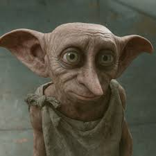
DOBBY
A free House-elf fiercely loyal to Harry Potter. Died a hero's death saving friends.
KREACHER
House-elf of the Black family. Loyalty shifted after being treated with kindness. Led elves in battle.
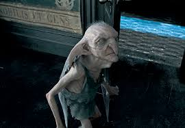
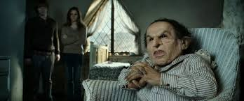
GRIPHOOK
Goblin at Gringotts. Helped steal the Cup Horcrux but betrayed the trio for the Sword.
WINKY
Winky was a house-elf of the Crouch family. She was dismissed after the World Cup. Winky struggled with freedom. She later worked at Hogwarts.
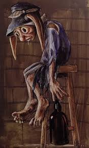
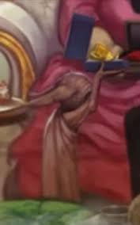
HOKEY
Hokey was Hepzibah Smith’s house-elf. She was framed for murder. Hokey unknowingly helped Voldemort. Her memory was altered.
ARAGOG
Aragog was a giant Acromantula. He lived in the Forbidden Forest. Aragog was raised by Hagrid. He died of old age.
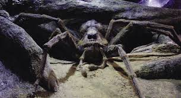
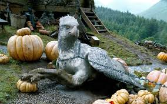
BUCKBEAK
Buckbeak was a Hippogriff. He was sentenced to execution. Buckbeak escaped with Sirius Black. He later helped fight Death Eaters.
FAWKES
Fawkes was Dumbledore’s phoenix. His tears healed wounds. Fawkes carried heavy loads. He disappeared after Dumbledore’s death.
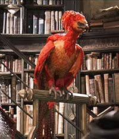
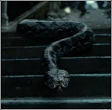
NAGINI
Nagini was Voldemort’s snake. She was a living Horcrux. Nagini attacked multiple victims. She was killed by Neville Longbottom.
HEDWIG
Hedwig was Harry’s snowy owl. She delivered mail faithfully. Hedwig symbolized Harry’s innocence. She died protecting him.
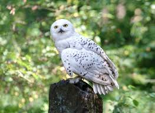
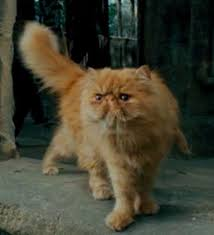
CROOKSHANKS
Crookshanks was Hermione’s cat. He was unusually intelligent. Crookshanks distrusted Scabbers. He helped Sirius Black.
SCABBERS
Scabbers was Ron’s pet rat. He was secretly Peter Pettigrew. Scabbers faked his death. He later escaped Hogwarts.
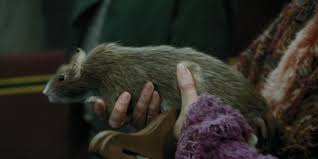
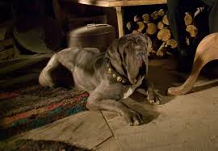
FANG
Fang was Hagrid’s boarhound. He appeared frightening but was gentle. Fang feared danger easily. He remained loyal to Hagrid.
FLUFFY
Fluffy was a three-headed dog. He guarded the Philosopher’s Stone. Music put Fluffy to sleep. He was later removed from Hogwarts.
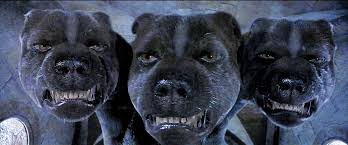